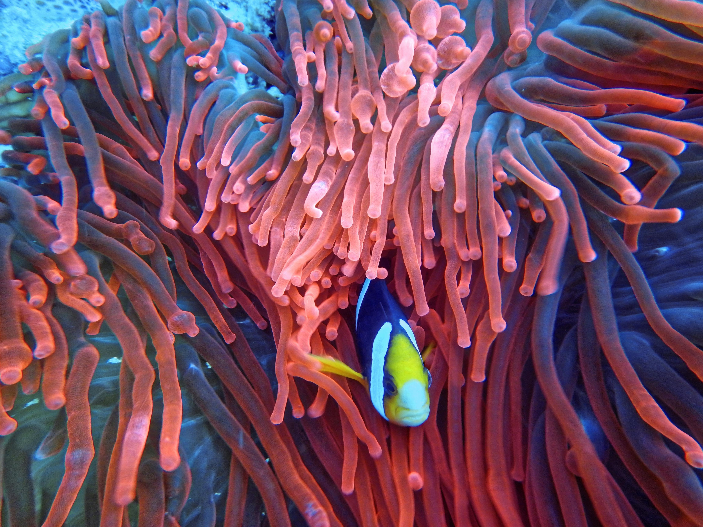

Explore Coral Reef Conservation Resources
Protecting coral reefs is crucial to maintaining the health of our oceans. Explore these resources to learn more about coral reef conservation efforts.
Kuprikov, Aleksey. Photo of a Fish on Corals. 2018. Pexels, https://www.pexels.com/photo/photo-of-a-fish-on-corals-1522160/.
Zhugewala. Assorted Fish in Sea with Corals. 2019. Pexels, https://www.pexels.com/photo/assorted-fish-in-sea-with-corals-3410956/.
PhotoMIX Company. Underwater Photography of Coral Reef in Water. 2016. Pexels, https://www.pexels.com/photo/underwater-photography-of-coral-reef-in-water-3635910/.